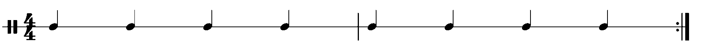
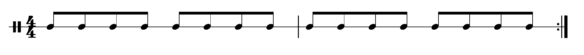
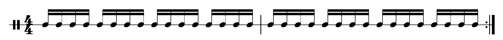
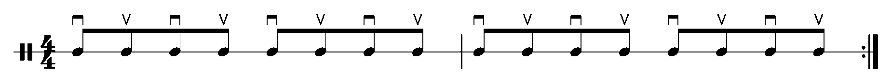

In most music that we listen to, the music has some beat. This beat is divided into measures or bars. Usually you can hear or feel the length of a bar when you listen to a song. Most common is for a song to have its bars each with 4 beats. When this is the case we say the song is in 4. It is also common to have songs with 3 beats per bar, and we say the song is in 3. The tempo of the song refers to the speed at which the beats occur.
Below are a couple examples of songs that are in 4. Listen and try to tap your foot to the music to identify the beats. Then pay attention groupings of four beats.
Below is an example of a song in 3. Again, tap your foot to identify the beat, and listen to the groupings of three.
Classifying songs into those that have 4 beats per bar and 3 beats per bar isn't an exact science, so don't worry if you find a song that is difficult to identify. Sometimes a song is fast enough that we can't tap our foot comfortably to the beat, so our brains group beats together into larger beats, and then bars are made out of these "big beats." This is common when dividing the bar into multiples of 3. Below are some examples. These examples have 12 beats per bar, but there are big beats made out of 3 small beats, which creates the sound of being in 3 and of being in 4 at the same time.
To be able to talk more about beats and bars and rhythms, we need a method of notating these things. In music notation we have different types of notes. The most basic is called a quarter note. It is called a quarter note because when a song is in 4 (which is the most common) it represents a quarter of a bar (or measure). Quarter notes are notated with a dot and a stem, as shown below. Below shows two measures of quarter notes.

Quarter notes can be divided in half to create 8th notes. When we notate 8th notes we draw a single layer bar over the top, typically connecting a group of 8th notes, as seen below.

We can also divide notes in half again to create 16th notes. There are sixteen 16th notes in a measure. Below shows how we notate these 16th notes.

For now this gives us enough of a background to start playing these rhythms on the guitar. Until later we will focus only on songs that are in 4. Songs that have multiples of 3 notes per measure we will revisit later.
Exercise: For the following songs, listen and tap your foot with the beat. After identifying the beats, use the tap tempo feature on the metronome below to find the tempo for the songs. You can check yourself with the tempos given below. Also identify how many beats are in each measure and if there are any "big beats".
Use this metronome to measure the tempo. Press the finger button and then tap the metronome with the beat of the song.
Africa - 4 beats per measure, about 92 beats per minute, no significant big-beats/small-beats
Little Blue - 4 beats per measure, about 82 beats per minute. You could possibly feel this one twice as fast, with quarter notes around 164 beats per measure.
Norwegian Wood - 3 beats per measure, about 180 beats per minute. You could feel big beats made up of three small beats, which means the big beats are at a tempo of about 60 beats per minute.
Footprints - 3 beats per measure, about 140 beats per minute. The tempo of this one is just right, so there aren't significant big-beats.
Are You Looking Up - 4 beats per measure, about 78 beats per minute.
Money - 7 beats per measure, about 130 beats per minute.
When strumming a rhythm or background part on the guitar, we typically use what is called a "grid." A grid is a way of dividing up the notes in the measure to determine which notes are downstrokes and which notes are upstrokes. The grid we choose to use is determined by the tempo, number of beats per measure, and the smallest rhythm we need to play.
We will start with the quarter note grid. This is the simplest and most versatile. The quarter note grid plays 8th notes in a down-up-down-up sequence.
